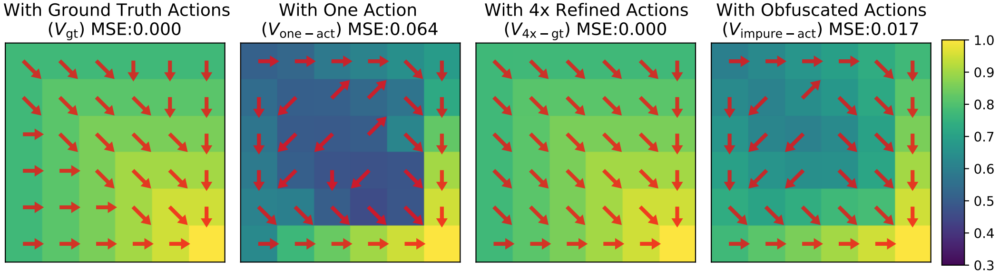
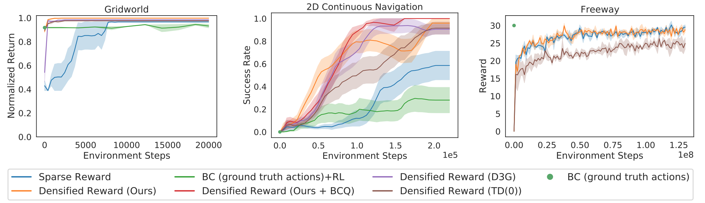
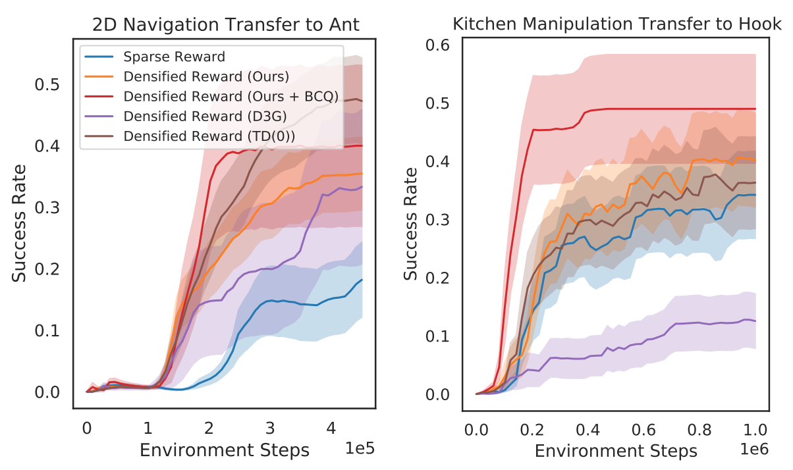
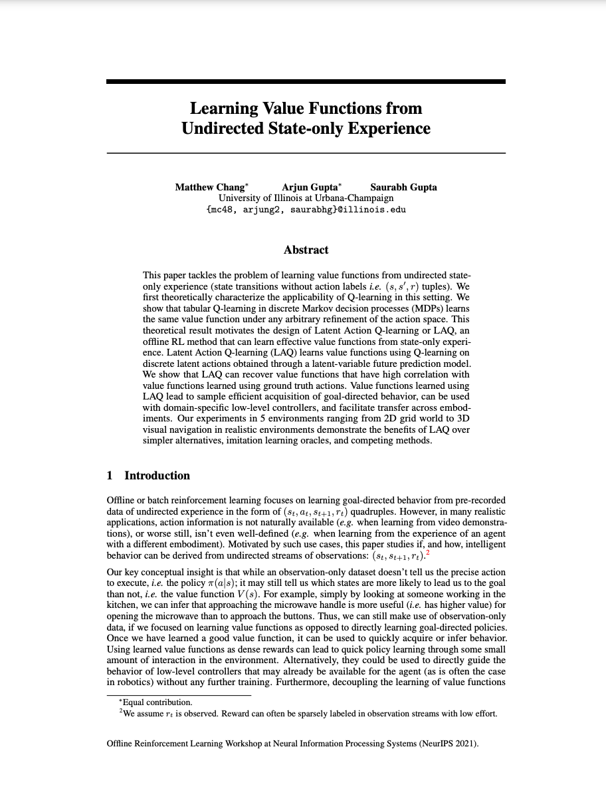

Learning Value Functions From
Undirected State-Only Experience
|
Matthew Chang
|
Arjun Gupta
|
Saurabh Gupta
|
|
UIUC
|
UIUC
|
UIUC
|
This paper tackles the problem of learning value functions from undirected state-only experience (state transitions without action labels i.e. (s,s',r) tuples). We first theoretically characterize the applicability of Q-learning in this setting. We show that tabular Q-learning in discrete Markov decision processes (MDPs) learns the same value function under any arbitrary refinement of the action space. This theoretical result motivates the design of Latent Action Q-learning or LAQ, an offline RL method that can learn effective value functions from state-only experience. Latent Action Q-learning (LAQ) learns value functions using Q-learning on discrete latent actions obtained through a latent-variable future prediction model. We show that LAQ can recover value functions that have high correlation with value functions learned using ground truth actions. Value functions learned using LAQ lead to sample efficient acquisition of goal-directed behavior, can be used with domain-specific low-level controllers, and facilitate transfer across embodiments. Our experiments in 5 environments ranging from 2D grid world to 3D visual navigation in realistic environments demonstrate the benefits of LAQ over simpler alternatives, imitation learning oracles, and competing methods.
Latent Action Q-Learning
Our proposed approach decouples learning into three steps: mining latent actions
from state-only trajectories, using these latent actions for Q-learning to obtain value functions, and
learning a policy to act according to the learned value function. As per our analysis, if learned latent
actions are a state-conditioned refinement of the original actions, Q-learning will result in good value
functions, that will lead to good behaviors.
Behaviors from Value Functions
We show that there are settings in which Q-learning can recover the optimal value function even in the absence of the knowledge of underlying actions. Concretely, we prove that if we are able to obtain an action space which is a strict refinement of the original action
space, then Q-learning in this refined action space recovers the optimal value function.

We evaluate our method in five environments which test our approach on factors that make
policy learning hard: continuous control, high-dimensional observations and control, complex real
world appearance, 3D geometric reasoning, and learning across embodiments. LAQ learned value functions speed up learning in the different settings over learning simply with sparse
rewards. In almost all settings, our method not only learns more
quickly than sparse reward, but converges to a higher mean performance.

Decoupling
the learning of value function and the policy has the advantage that learned value functions can be
used to improve learning across embodiment. LAQ-densified rewards functions, speed-up learning
and consistently guide to higher reward solutions than sparse task rewards, or D3G.

Paper
|

|
|
Matthew Chang*, Arjun Gupta*, Saurabh Gupta.
Learning Value Functions from Undirected State-only Experience.
International Conference on Learning Representations, 2022
Deep Reinforcement Learning Workshop at NeurIPS, 2021
Offline Reinforcement Learning Workshop at NeurIPS, 2021
* indicates equal contribution
@inproceedings{chang2022learning,
author = "Chang, Matthew and Gupta, Arjun and Gupta, Saurabh",
title = "Learning Value Functions from Undirected State-only Experience",
booktitle = "International Conference on Learning Representations",
year = "2022"
}
|
Acknowledgements
This material is based upon work supported by NSF under Grant No. IIS-2007035. Any opinions, findings, and conclusions or recommendations expressed in this material are those of the author(s) and do not necessarily reflect the views of the National Science Foundation.
Website template from here, here, and here.
|
{kind=link}